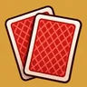

Exploit
Poker Trainer

English
Français
Español
Português (Brasil)
Deutsch
Italiano
Nederlands
Polski
Čeština
Magyar
Română
Svenska
Dansk
Norsk
Suomi
Türkçe
Ελληνικά
Русский
Українська
Български
Tiếng Việt
ไทย
हिन्दी
中文（简体）
中文（繁體）
日本語
한국어
6-max
9-max
×
×
×
×